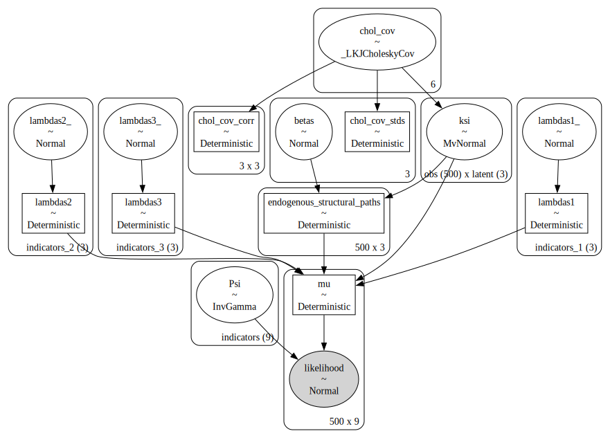

import pymc as pm
import pandas as pd
import numpy as np
from pytensor import tensor as pt
import arviz as az
from matplotlib import pyplot as plt
import seaborn as snsdf = pd.read_csv('sem_data.csv')
df.head()| motiv | harm | stabi | ppsych | ses | verbal | read | arith | spell | |
|---|---|---|---|---|---|---|---|---|---|
| 0 | -7.907122 | -5.075312 | -3.138836 | -17.800210 | 4.766450 | -3.633360 | -3.488981 | -9.989121 | -6.567873 |
| 1 | 1.751478 | -4.155847 | 3.520752 | 7.009367 | -6.048681 | -7.693461 | -4.520552 | 8.196238 | 8.778973 |
| 2 | 14.472570 | -4.540677 | 4.070600 | 23.734260 | -16.970670 | -3.909941 | -4.818170 | 7.529984 | -5.688716 |
| 3 | -1.165421 | -5.668406 | 2.600437 | 1.493158 | 1.396363 | 21.409450 | -3.138441 | 5.730547 | -2.915676 |
| 4 | -4.222899 | -10.072150 | -6.030737 | -5.985864 | -18.376400 | -1.438816 | -2.009742 | -0.623953 | -1.024624 |
Measurment Model
coords = {
"obs": list(range(len(df))),
"indicators": ["motiv", "harm", "stabi", "verbal", "ses", "ppsych", "read", "arith", "spell"],
"indicators_1": ["motiv", "harm", "stabi"],
"indicators_2": ["verbal", "ses", "ppsych"],
"indicators_3": ["read", "arith", "spell"],
"latent": ["adjust", "risk", "achieve"],
}
def make_lambda(indicators, name='lambdas1', priors=[1, 10]):
""" Takes an argument indicators which is a string in the coords dict"""
temp_name = name + '_'
lambdas_ = pm.Normal(temp_name, priors[0], priors[1], dims=(indicators))
# Force a fixed scale on the factor loadings for factor 1
lambdas_1 = pm.Deterministic(
name, pt.set_subtensor(lambdas_[0], 1), dims=(indicators)
)
return lambdas_1obs_idx = list(range(len(df)))
with pm.Model(coords=coords) as model:
# Set up Factor Loadings
lambdas_1 = make_lambda('indicators_1', 'lambdas1')
lambdas_2 = make_lambda('indicators_2', 'lambdas2', priors=[1, 2])
lambdas_3 = make_lambda('indicators_3', 'lambdas3')
# Specify covariance structure between latent factors
kappa = 0
sd_dist = pm.Exponential.dist(1.0, shape=3)
chol, _, _ = pm.LKJCholeskyCov("chol_cov", n=3, eta=2, sd_dist=sd_dist, compute_corr=True)
ksi = pm.MvNormal("ksi", kappa, chol=chol, dims=("obs", "latent"))
# Construct Pseudo Observation matrix based on Factor Loadings
m1 = ksi[obs_idx, 0] * lambdas_1[0]
m2 = ksi[obs_idx, 0] * lambdas_1[1]
m3 = ksi[obs_idx, 0] * lambdas_1[2]
m4 = ksi[obs_idx, 1] * lambdas_2[0]
m5 = ksi[obs_idx, 1] * lambdas_2[1]
m6 = ksi[obs_idx, 1] * lambdas_2[2]
m7 = ksi[obs_idx, 2] * lambdas_3[0]
m8 = ksi[obs_idx, 2] * lambdas_3[1]
m9 = ksi[obs_idx, 2] * lambdas_3[2]
mu = pm.Deterministic("mu", pm.math.stack([m1, m2, m3, m4, m5, m6, m7, m8, m9]).T)
## Error Terms
Psi = pm.InverseGamma("Psi", 2, 13, dims="indicators")
# Likelihood
_ = pm.Normal(
"likelihood",
mu,
Psi,
observed=df[coords['indicators']].values,
)
idata = pm.sample(
draws=1000,
chains=4,
nuts_sampler="numpyro", target_accept=0.95, idata_kwargs={"log_likelihood": True},
tune=2000,
random_seed=150
)
idata.extend(pm.sample_posterior_predictive(idata))
pm.model_to_graphviz(model)az.summary(idata, var_names=["lambdas1", "lambdas2", "lambdas3"])/Users/nathanielforde/mambaforge/envs/bayesian_causal_book/lib/python3.10/site-packages/arviz/stats/diagnostics.py:596: RuntimeWarning: invalid value encountered in scalar divide
(between_chain_variance / within_chain_variance + num_samples - 1) / (num_samples)
/Users/nathanielforde/mambaforge/envs/bayesian_causal_book/lib/python3.10/site-packages/arviz/stats/diagnostics.py:596: RuntimeWarning: invalid value encountered in scalar divide
(between_chain_variance / within_chain_variance + num_samples - 1) / (num_samples)
/Users/nathanielforde/mambaforge/envs/bayesian_causal_book/lib/python3.10/site-packages/arviz/stats/diagnostics.py:596: RuntimeWarning: invalid value encountered in scalar divide
(between_chain_variance / within_chain_variance + num_samples - 1) / (num_samples)| mean | sd | hdi_3% | hdi_97% | mcse_mean | mcse_sd | ess_bulk | ess_tail | r_hat | |
|---|---|---|---|---|---|---|---|---|---|
| lambdas1[motiv] | 1.000 | 0.000 | 1.000 | 1.000 | 0.000 | 0.000 | 4000.0 | 4000.0 | NaN |
| lambdas1[harm] | 0.895 | 0.043 | 0.814 | 0.973 | 0.002 | 0.001 | 521.0 | 1401.0 | 1.01 |
| lambdas1[stabi] | 0.703 | 0.047 | 0.617 | 0.791 | 0.002 | 0.001 | 801.0 | 1571.0 | 1.01 |
| lambdas2[verbal] | 1.000 | 0.000 | 1.000 | 1.000 | 0.000 | 0.000 | 4000.0 | 4000.0 | NaN |
| lambdas2[ses] | 0.842 | 0.087 | 0.679 | 1.000 | 0.004 | 0.003 | 453.0 | 1294.0 | 1.01 |
| lambdas2[ppsych] | -0.801 | 0.084 | -0.969 | -0.653 | 0.004 | 0.003 | 521.0 | 1276.0 | 1.00 |
| lambdas3[read] | 1.000 | 0.000 | 1.000 | 1.000 | 0.000 | 0.000 | 4000.0 | 4000.0 | NaN |
| lambdas3[arith] | 0.841 | 0.035 | 0.773 | 0.906 | 0.001 | 0.001 | 1955.0 | 2586.0 | 1.00 |
| lambdas3[spell] | 0.981 | 0.029 | 0.927 | 1.037 | 0.001 | 0.001 | 1123.0 | 1700.0 | 1.00 |
az.plot_trace(idata, var_names=['lambdas1', 'lambdas2', 'lambdas3'])
plt.tight_layout();/Users/nathanielforde/mambaforge/envs/bayesian_causal_book/lib/python3.10/site-packages/arviz/stats/density_utils.py:488: UserWarning: Your data appears to have a single value or no finite values
warnings.warn("Your data appears to have a single value or no finite values")
/Users/nathanielforde/mambaforge/envs/bayesian_causal_book/lib/python3.10/site-packages/arviz/stats/density_utils.py:488: UserWarning: Your data appears to have a single value or no finite values
warnings.warn("Your data appears to have a single value or no finite values")
/Users/nathanielforde/mambaforge/envs/bayesian_causal_book/lib/python3.10/site-packages/arviz/stats/density_utils.py:488: UserWarning: Your data appears to have a single value or no finite values
warnings.warn("Your data appears to have a single value or no finite values")
def make_factor_loadings_df(idata):
factor_loadings = pd.DataFrame(
az.summary(
idata, var_names=["lambdas1", "lambdas2", "lambdas3"]
)["mean"]
).reset_index()
factor_loadings["factor"] = factor_loadings["index"].str.split("[", expand=True)[0]
factor_loadings.columns = ["factor_loading", "factor_loading_weight", "factor"]
factor_loadings["factor_loading_weight_sq"] = factor_loadings["factor_loading_weight"] ** 2
factor_loadings["sum_sq_loadings"] = factor_loadings.groupby("factor")[
"factor_loading_weight_sq"
].transform(sum)
factor_loadings["error_variances"] = az.summary(idata, var_names=["Psi"])["mean"].values
factor_loadings["total_indicator_variance"] = (
factor_loadings["factor_loading_weight_sq"] + factor_loadings["error_variances"]
)
factor_loadings["total_variance"] = factor_loadings["total_indicator_variance"].sum()
factor_loadings["indicator_explained_variance"] = (
factor_loadings["factor_loading_weight_sq"] / factor_loadings["total_variance"]
)
factor_loadings["factor_explained_variance"] = (
factor_loadings["sum_sq_loadings"] / factor_loadings["total_variance"]
)
num_cols = [c for c in factor_loadings.columns if not c in ["factor_loading", "factor"]]
return factor_loadings
pd.set_option("display.max_colwidth", 15)
factor_loadings = make_factor_loadings_df(idata)
num_cols = [c for c in factor_loadings.columns if not c in ["factor_loading", "factor"]]
factor_loadings.style.format("{:.3f}", subset=num_cols).background_gradient(
axis=0, subset=["indicator_explained_variance", "factor_explained_variance"]
)/Users/nathanielforde/mambaforge/envs/bayesian_causal_book/lib/python3.10/site-packages/arviz/stats/diagnostics.py:596: RuntimeWarning: invalid value encountered in scalar divide
(between_chain_variance / within_chain_variance + num_samples - 1) / (num_samples)
/Users/nathanielforde/mambaforge/envs/bayesian_causal_book/lib/python3.10/site-packages/arviz/stats/diagnostics.py:596: RuntimeWarning: invalid value encountered in scalar divide
(between_chain_variance / within_chain_variance + num_samples - 1) / (num_samples)
/Users/nathanielforde/mambaforge/envs/bayesian_causal_book/lib/python3.10/site-packages/arviz/stats/diagnostics.py:596: RuntimeWarning: invalid value encountered in scalar divide
(between_chain_variance / within_chain_variance + num_samples - 1) / (num_samples)
/var/folders/__/ng_3_9pn1f11ftyml_qr69vh0000gn/T/ipykernel_19714/2929805399.py:12: FutureWarning: The provided callable <built-in function sum> is currently using SeriesGroupBy.sum. In a future version of pandas, the provided callable will be used directly. To keep current behavior pass the string "sum" instead.
].transform(sum)| factor_loading | factor_loading_weight | factor | factor_loading_weight_sq | sum_sq_loadings | error_variances | total_indicator_variance | total_variance | indicator_explained_variance | factor_explained_variance | |
|---|---|---|---|---|---|---|---|---|---|---|
| 0 | lambdas1[motiv] | 1.000 | lambdas1 | 1.000 | 2.295 | 3.676 | 4.676 | 60.931 | 0.016 | 0.038 |
| 1 | lambdas1[harm] | 0.895 | lambdas1 | 0.801 | 2.295 | 5.623 | 6.424 | 60.931 | 0.013 | 0.038 |
| 2 | lambdas1[stabi] | 0.703 | lambdas1 | 0.494 | 2.295 | 7.605 | 8.099 | 60.931 | 0.008 | 0.038 |
| 3 | lambdas2[verbal] | 1.000 | lambdas2 | 1.000 | 2.351 | 6.915 | 7.915 | 60.931 | 0.016 | 0.039 |
| 4 | lambdas2[ses] | 0.842 | lambdas2 | 0.709 | 2.351 | 8.027 | 8.736 | 60.931 | 0.012 | 0.039 |
| 5 | lambdas2[ppsych] | -0.801 | lambdas2 | 0.642 | 2.351 | 8.242 | 8.884 | 60.931 | 0.011 | 0.039 |
| 6 | lambdas3[read] | 1.000 | lambdas3 | 1.000 | 2.670 | 3.409 | 4.409 | 60.931 | 0.016 | 0.044 |
| 7 | lambdas3[arith] | 0.841 | lambdas3 | 0.707 | 2.670 | 6.168 | 6.875 | 60.931 | 0.012 | 0.044 |
| 8 | lambdas3[spell] | 0.981 | lambdas3 | 0.962 | 2.670 | 3.951 | 4.913 | 60.931 | 0.016 | 0.044 |
fig, axs = plt.subplots(1, 2, figsize=(20, 9))
axs = axs.flatten()
az.plot_energy(idata, ax=axs[0])
az.plot_forest(idata, var_names=["lambdas1", "lambdas2", "lambdas3"], combined=True, ax=axs[1]);
plt.tight_layout();
drivers = coords['indicators']
def get_posterior_resids(idata, samples=100, metric="cov"):
resids = []
for i in range(100):
if metric == "cov":
model_cov = pd.DataFrame(
az.extract(idata["posterior_predictive"])["likelihood"][:, :, i]
).cov()
obs_cov = df[drivers].cov()
else:
model_cov = pd.DataFrame(
az.extract(idata["posterior_predictive"])["likelihood"][:, :, i]
).corr()
obs_cov = df[drivers].corr()
model_cov.index = obs_cov.index
model_cov.columns = obs_cov.columns
residuals = model_cov - obs_cov
resids.append(residuals.values.flatten())
residuals_posterior = pd.DataFrame(pd.DataFrame(resids).mean().values.reshape(9, 9))
residuals_posterior.index = obs_cov.index
residuals_posterior.columns = obs_cov.index
return residuals_posterior
residuals_posterior_cov = get_posterior_resids(idata, 1000)
residuals_posterior_corr = get_posterior_resids(idata, 1000, metric="corr")fig, ax = plt.subplots(figsize=(20, 10))
mask = np.triu(np.ones_like(residuals_posterior_corr, dtype=bool))
ax = sns.heatmap(residuals_posterior_corr, annot=True, cmap="bwr", mask=mask)
ax.set_title("Residuals between Model Implied and Sample Correlations", fontsize=25);
def make_ppc(
idata,
samples=100,
drivers=drivers,
dims=(3, 3),
):
fig, axs = plt.subplots(dims[0], dims[1], figsize=(20, 10))
axs = axs.flatten()
for i in range(len(drivers)):
for j in range(samples):
temp = az.extract(idata["posterior_predictive"].sel({"likelihood_dim_3": i}))[
"likelihood"
].values[:, j]
temp = pd.DataFrame(temp, columns=["likelihood"])
if j == 0:
axs[i].hist(df[drivers[i]], alpha=0.3, ec="black", bins=20, label="Observed Scores")
axs[i].hist(
temp["likelihood"], color="purple", alpha=0.1, bins=20, label="Predicted Scores"
)
else:
axs[i].hist(df[drivers[i]], alpha=0.3, ec="black", bins=20)
axs[i].hist(temp["likelihood"], color="purple", alpha=0.1, bins=20)
axs[i].set_title(f"Posterior Predictive Checks {drivers[i]}")
axs[i].legend()
plt.tight_layout()
plt.show()
#make_ppc(idata)SEM Model
import numpy as np
import pandas as pd
data = np.random.multivariate_normal([0,0,0], [[1, 0, 0], [0,1, 0], [0, 0, 1]], size=(500))
data = np.ones((500, 3))
betas = np.zeros((3, 3))
betas[1, 0] = 0.5
betas[1, 2] = 0.5
betas[0, 2] = 0.7
B_matrix = pd.DataFrame(betas, index=['adjust_coef', 'risk_coef', 'achieve_coef'], columns=['adjust_target', 'risk_target', 'achieve_target'])
data = pd.DataFrame(data, columns=['adjust', 'risk', 'achieve'])
B_matrix| adjust_target | risk_target | achieve_target | |
|---|---|---|---|
| adjust_coef | 0.0 | 0.0 | 0.7 |
| risk_coef | 0.5 | 0.0 | 0.5 |
| achieve_coef | 0.0 | 0.0 | 0.0 |
data.head()| adjust | risk | achieve | |
|---|---|---|---|
| 0 | 1.0 | 1.0 | 1.0 |
| 1 | 1.0 | 1.0 | 1.0 |
| 2 | 1.0 | 1.0 | 1.0 |
| 3 | 1.0 | 1.0 | 1.0 |
| 4 | 1.0 | 1.0 | 1.0 |
pd.DataFrame(np.dot(data, B_matrix)).head()| 0 | 1 | 2 | |
|---|---|---|---|
| 0 | 0.5 | 0.0 | 1.2 |
| 1 | 0.5 | 0.0 | 1.2 |
| 2 | 0.5 | 0.0 | 1.2 |
| 3 | 0.5 | 0.0 | 1.2 |
| 4 | 0.5 | 0.0 | 1.2 |
obs_idx = list(range(len(df)))
with pm.Model(coords=coords) as model:
# Set up Factor Loadings
lambdas_1 = make_lambda('indicators_1', 'lambdas1', priors=[1, .5]) #adjust
lambdas_2 = make_lambda('indicators_2', 'lambdas2', priors=[1, .5]) # risk
lambdas_3 = make_lambda('indicators_3', 'lambdas3', priors=[1, .5]) # achieve
# Specify covariance structure between latent factors
kappa = 0
sd_dist = pm.Exponential.dist(1.0, shape=3)
chol, _, _ = pm.LKJCholeskyCov("chol_cov", n=3, eta=2, sd_dist=sd_dist, compute_corr=True)
ksi = pm.MvNormal("ksi", kappa, chol=chol, dims=("obs", "latent"))
coefs = pm.Normal('betas', 0, .5, size=3)
zeros = pt.zeros((3, 3))
## adjust ~ risk
zeros1 = pt.set_subtensor(zeros[1, 0], coefs[0])
## achieve ~ risk + adjust
zeros2 = pt.set_subtensor(zeros1[1, 2], coefs[1])
coefs_ = pt.set_subtensor(zeros2[0, 2], coefs[2])
structural_relations = pm.Deterministic('endogenous_structural_paths', pm.math.dot(ksi, coefs_))
# Construct Pseudo Observation matrix based on Factor Loadings
m1 = ksi[obs_idx, 0] * lambdas_1[0] + structural_relations[obs_idx, 0] #adjust
m2 = ksi[obs_idx, 0] * lambdas_1[1] + structural_relations[obs_idx, 0] #adjust
m3 = ksi[obs_idx, 0] * lambdas_1[2] + structural_relations[obs_idx, 0] #adjust
m4 = ksi[obs_idx, 1] * lambdas_2[0] + structural_relations[obs_idx, 1] #risk
m5 = ksi[obs_idx, 1] * lambdas_2[1] + structural_relations[obs_idx, 1] #risk
m6 = ksi[obs_idx, 1] * lambdas_2[2] + structural_relations[obs_idx, 1] #risk
m7 = ksi[obs_idx, 2] * lambdas_3[0] + structural_relations[obs_idx, 2] #achieve
m8 = ksi[obs_idx, 2] * lambdas_3[1] + structural_relations[obs_idx, 2] #achieve
m9 = ksi[obs_idx, 2] * lambdas_3[2] + structural_relations[obs_idx, 2] #achieve
mu = pm.Deterministic("mu", pm.math.stack([m1, m2, m3, m4, m5, m6, m7, m8, m9]).T)
## Error Terms
Psi = pm.InverseGamma("Psi", 2, 13, dims="indicators")
# Likelihood
_ = pm.Normal(
"likelihood",
mu,
Psi,
observed=df[coords['indicators']].values,
)
idata = pm.sample(
draws=2500,
chains=4,
#nuts_sampler="numpyro",
target_accept=0.90, idata_kwargs={"log_likelihood": True},
random_seed=150,
tune=1000,
)
idata.extend(pm.sample_posterior_predictive(idata))
pm.model_to_graphviz(model)Auto-assigning NUTS sampler...
Initializing NUTS using jitter+adapt_diag...
Multiprocess sampling (4 chains in 4 jobs)
NUTS: [lambdas1_, lambdas2_, lambdas3_, chol_cov, ksi, betas, Psi]Sampling 4 chains for 1_000 tune and 2_500 draw iterations (4_000 + 10_000 draws total) took 161 seconds.
There were 1 divergences after tuning. Increase `target_accept` or reparameterize.
The rhat statistic is larger than 1.01 for some parameters. This indicates problems during sampling. See https://arxiv.org/abs/1903.08008 for details
The effective sample size per chain is smaller than 100 for some parameters. A higher number is needed for reliable rhat and ess computation. See https://arxiv.org/abs/1903.08008 for details
Sampling: [likelihood]
az.summary(idata, var_names=["lambdas1", "lambdas2", "lambdas3", "betas"])/Users/nathanielforde/mambaforge/envs/bayesian_causal_book/lib/python3.10/site-packages/arviz/stats/diagnostics.py:596: RuntimeWarning: invalid value encountered in scalar divide
(between_chain_variance / within_chain_variance + num_samples - 1) / (num_samples)
/Users/nathanielforde/mambaforge/envs/bayesian_causal_book/lib/python3.10/site-packages/arviz/stats/diagnostics.py:596: RuntimeWarning: invalid value encountered in scalar divide
(between_chain_variance / within_chain_variance + num_samples - 1) / (num_samples)
/Users/nathanielforde/mambaforge/envs/bayesian_causal_book/lib/python3.10/site-packages/arviz/stats/diagnostics.py:596: RuntimeWarning: invalid value encountered in scalar divide
(between_chain_variance / within_chain_variance + num_samples - 1) / (num_samples)| mean | sd | hdi_3% | hdi_97% | mcse_mean | mcse_sd | ess_bulk | ess_tail | r_hat | |
|---|---|---|---|---|---|---|---|---|---|
| lambdas1[motiv] | 1.000 | 0.000 | 1.000 | 1.000 | 0.000 | 0.000 | 10000.0 | 10000.0 | NaN |
| lambdas1[harm] | 0.850 | 0.045 | 0.766 | 0.933 | 0.001 | 0.001 | 997.0 | 2361.0 | 1.00 |
| lambdas1[stabi] | 0.651 | 0.052 | 0.556 | 0.748 | 0.002 | 0.001 | 988.0 | 3122.0 | 1.00 |
| lambdas2[verbal] | 1.000 | 0.000 | 1.000 | 1.000 | 0.000 | 0.000 | 10000.0 | 10000.0 | NaN |
| lambdas2[ses] | 0.833 | 0.081 | 0.681 | 0.986 | 0.002 | 0.001 | 2282.0 | 4694.0 | 1.00 |
| lambdas2[ppsych] | -0.764 | 0.079 | -0.920 | -0.623 | 0.002 | 0.001 | 2399.0 | 4215.0 | 1.00 |
| lambdas3[read] | 1.000 | 0.000 | 1.000 | 1.000 | 0.000 | 0.000 | 10000.0 | 10000.0 | NaN |
| lambdas3[arith] | 0.610 | 0.057 | 0.498 | 0.712 | 0.003 | 0.002 | 381.0 | 1068.0 | 1.00 |
| lambdas3[spell] | 0.825 | 0.037 | 0.755 | 0.894 | 0.001 | 0.001 | 757.0 | 1717.0 | 1.00 |
| betas[0] | 0.202 | 0.139 | -0.065 | 0.457 | 0.010 | 0.007 | 186.0 | 202.0 | 1.02 |
| betas[1] | 0.207 | 0.178 | -0.129 | 0.534 | 0.012 | 0.009 | 208.0 | 487.0 | 1.01 |
| betas[2] | 0.747 | 0.104 | 0.556 | 0.942 | 0.006 | 0.004 | 311.0 | 810.0 | 1.01 |
make_ppc(idata)
residuals_posterior_cov = get_posterior_resids(idata, 1000)
residuals_posterior_corr = get_posterior_resids(idata, 1000, metric="corr")fig, ax = plt.subplots(figsize=(20, 10))
mask = np.triu(np.ones_like(residuals_posterior_corr, dtype=bool))
ax = sns.heatmap(residuals_posterior_corr, annot=True, cmap="bwr", mask=mask)
ax.set_title("Residuals between Model Implied and Sample Correlations", fontsize=25);